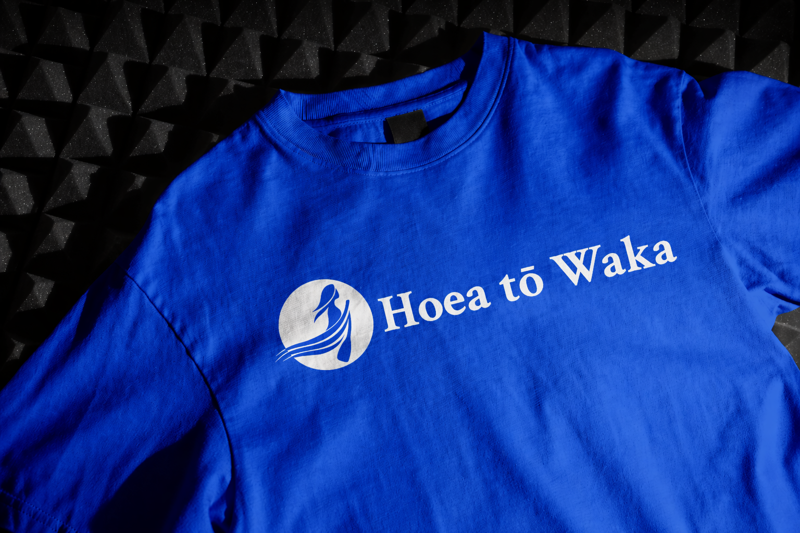
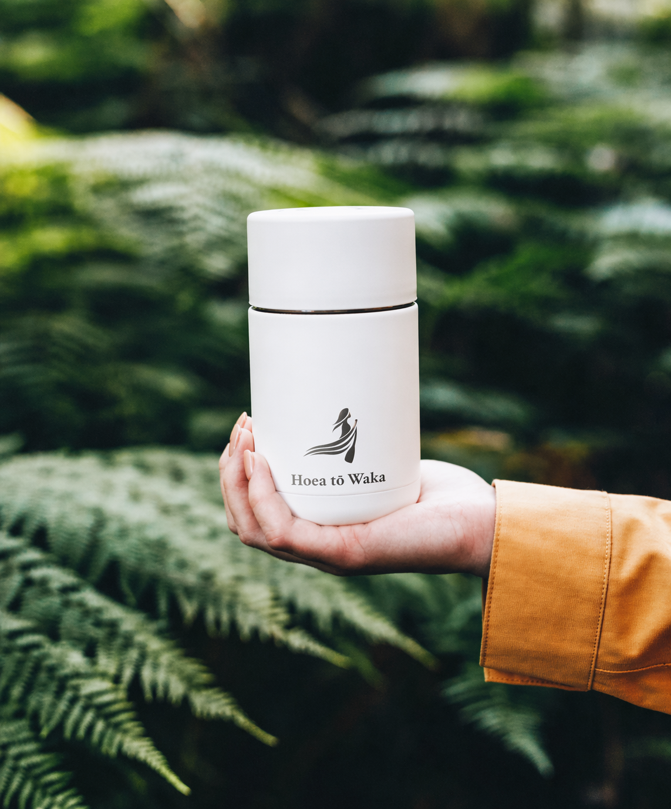
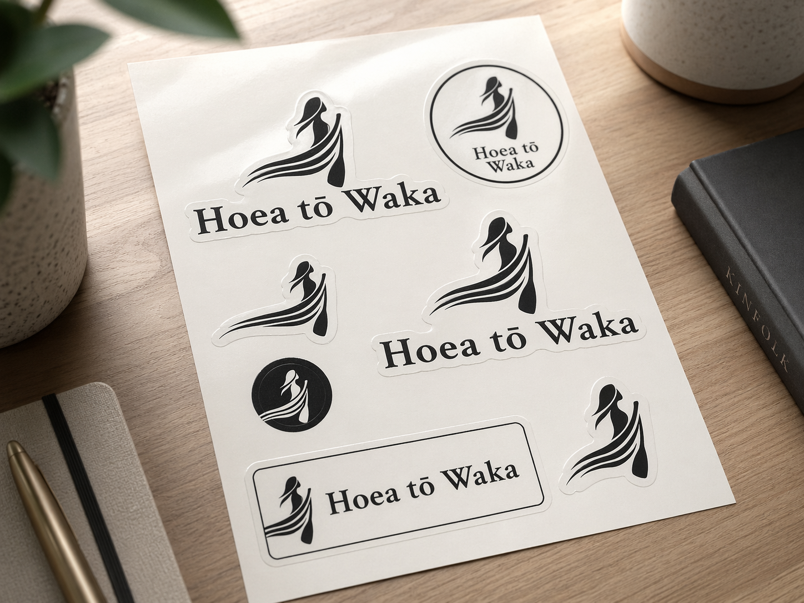
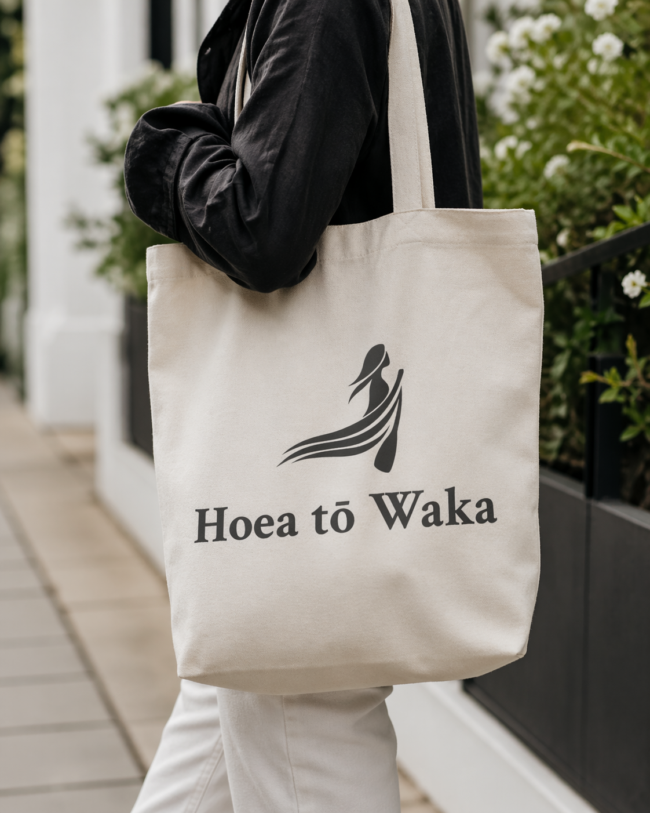
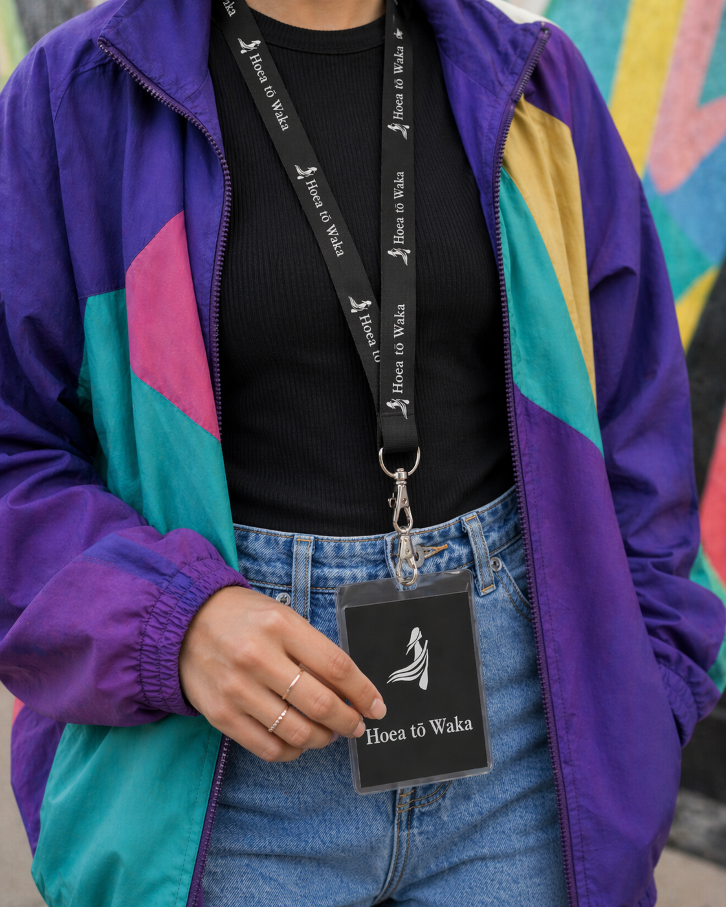
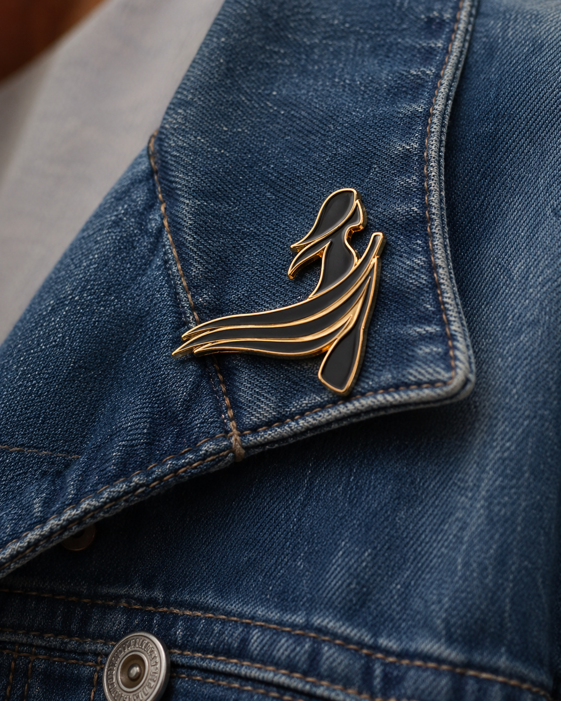
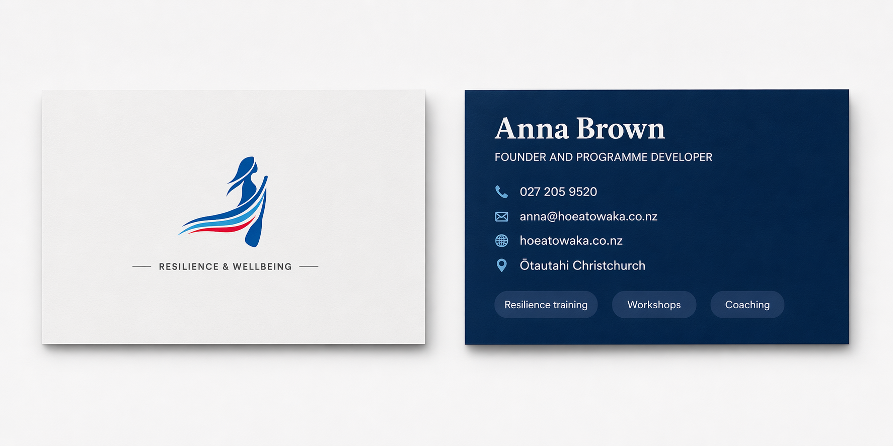

Hoea tō Waka is a resilience brand rooted in Aotearoa. The identity needs to feel calm,
practical, human, and strong enough to carry across workshops, digital touchpoints, and
printed material without losing warmth.
Brand Name
Hoea tō Waka
Brand Line
Strength in Aotearoa
Vision
To see stronger, more resilient people, teams, and communities across Aotearoa.
Mission
To deliver practical, culturally grounded resilience training, coaching, and resources that help people move through challenge with clarity and direction.
Created by Jamie WilsonVersion 1.02026
Logo
The mark combines symbolic parts that speak to leadership, movement, and direction. The
anatomy study shows how each element is read, and the background examples below define how
the logo should hold contrast in use.
Wahine
Woman
Represents leadership, presence, and the human strength at the centre of the brand.
Ngaru
Waves
Signals motion, adaptation, and the changing conditions we learn to move through.
Hoe
Paddle
Anchors the logo in waka imagery and points to direction, effort, and purposeful movement.
Created by Jamie WilsonVersion 1.02026
Logo
Logo Backgrounds
The Hoea tō Waka mark is designed to stay clear across dark, light, and muted surfaces.
Always use the version that gives the strongest contrast and preserves the wahine form,
wordmark, and overall integrity of the logo.
Created by Jamie WilsonVersion 1.02026
Palette
Colours
The palette balances deep harbour blues, open sky tones, tidal purple, and grounded
green with quiet neutral surfaces for text, backgrounds, and print use.
Primary
Primary Sea Colours
Harbour Blue
#365F8D / #24486F
Sky Current
#A3D9F6
Deep Tide Purple
#985B84 / #743F64
Kelp Green
#2E8C79
Secondary
Secondary Sea Colours
Foam White
#FFFFFF
Mist Grey
#F2F2F2
Deep Ink
#111111
Driftwood Grey
#605E5E
Pearl Wake
#E7EEF2
Created by Jamie WilsonVersion 1.02026
Typography
Typeface
Crimson Text
Crimson Text is the editorial voice of the system. It carries the more reflective,
grounded tone of the brand and is reserved for hero moments, section headings, and
signature statements.
Its contrast and rhythm give the identity a more human presence without feeling ornate
or ceremonial.
Manrope is the working typeface used for body copy, interface labels, navigation, and
practical information. It keeps the system crisp, modern, and readable across print and
digital layouts.
The family supports clear hierarchy without losing the calm and approachable tone of the
wider identity.
Supporting family
Manrope
Strength in Aotearoa
Headline / Manrope 800
Practical clarity for real-world resilience work.
Subheading / Manrope 700
Built for guidance, structure, and easy scanning across digital touchpoints.
Body / Manrope 400
Hoea tō Waka uses Manrope for paragraphs, labels, and supporting information so content
remains accessible, contemporary, and efficient to read.
Hoea tō Waka Brand GuidelinesSupporting Typeface / 03B
Created by Jamie WilsonVersion 1.02026
Mockups
Mockups help test the identity in real-world settings. These examples show the logo
holding up across apparel, drinkware, accessories, and smaller branded items, staying
bold, legible, and confident in both high-contrast and more natural product contexts.






Print
Business Cards
Print applications carry the logo into personal introductions and workshop material with a
clear front and back contact format.
Strength in Aotearoa
Anna Brown
Founder and Programme Developer
P 027 205 9520
E anna@hoeatowaka.co.nz
W hoeatowaka.co.nz
L Ōtautahi Christchurch

Digital
Email Signature
The email signature extends the identity into everyday communication with a practical
layout for the logo, role, and contact details.
To Amelia Thompson <amelia@harakekehealth.nz>
Subject Re: Team resilience workshop enquiry
Kia ora Amelia,
Thanks for getting in touch. I would be glad to put together a workshop option for your
team in Christchurch, with a focus on practical resilience tools and reflective exercises.
If next Tuesday or Wednesday suits, send through a preferred time and I can confirm a short
call.
Ngā mihi,
Anna Brown
Founder and Programme Developer
Strength in Aotearoa
P 027 205 9520
E anna@hoeatowaka.co.nz
W hoeatowaka.co.nz
L Ōtautahi Christchurch
Created by Jamie WilsonVersion 1.02026
Who it's for
OrganisationsHR and people leadersTeam leadersSupport professionals
Created by Jamie WilsonVersion 1.02026
How we can work together
In-house Workshops
Tailored half-day resilience training for teams and organisations.
Model positioned as evidence-based and flexible across kaupapa Māori and mainstream contexts
Service Page Signals
Current delivery ideas already on the site
Half-day workshops
Tailoring to organisation needs
Burnout prevention and reflective practice
Values alignment, motivation, clarity, and staff wellbeing
Topics include social inequalities, colonisation, and Te Tiriti
Calls to Action
Current CTA language
Go to inhouse workshops
Go to individual coaching
More for support professionals
See resources
Contact form submission
Website Audit
What is weak, what should stay, and where the rebuild should go.
The issue is not lack of substance. The issue is weak organisation and weak expression.
Main Problems
Positioning is too soft and too broad.
The homepage does not answer buyer questions quickly enough.
Copy quality reduces trust.
Service separation is unclear.
The model is explained more than the offer is sold.
Proof is weak or underused.
Information architecture is too flat.
Preserve
Strong cultural grounding in Aotearoa
The Hoea tō Waka metaphor and identity
Anna's lived and professional credibility
The connection between resilience, reflection, and practical application
The books and supporting resources as trust-builders
The kayak / wahine imagery already recognised in other materials
Practical Direction
Sharper homepage with one primary audience in mind
Clearer service pages built around outcomes
Stronger founder section tied to trust and relevance
Simpler language without losing cultural depth
Cleaner calls to action
Clear separation between core services and secondary resources
Suggested Messaging Priorities
What Hoea tō Waka does
Who it helps
Why it is credible
What services are available
What makes it distinct in Aotearoa
How to enquire
Risks if the Rebuild Goes Wrong
Overexplaining the model again without clarifying the offer
Making the site feel too clinical and losing warmth
Making the site feel too soft and losing commercial clarity
Treating books and resources as the main offer when they may be secondary
Writing for everyone instead of prioritising the actual buyer
The best outcome is a site that feels calm, credible, culturally grounded, clear to institutional
buyers, human rather than corporate, and professionally written.
Homepage Block Map
Current homepage translated into a rebuild structure.
This keeps the current content but fixes the heading hierarchy for a cleaner rebuild.
GeneralHeroImage BoxCall To ActionContentFeaturesHeadingFull Width DuoSocialTestimonialContactSlidersSite Parts
1. Site Parts
Header and navigation
Brand title should be plain linked brand text or a logo, not a page heading.
Tagline, main navigation, and services dropdown remain content, not headings.
Links: Home, About Hoea tō Waka, Services, In-house Workshops, Resilience One on One, Workshops for Support Professionals, Resources, Contact.
2. Hero
Opening banner
h1: Hoea tō Waka: Strength in Aotearoa.
Supporting line stays the same, but should be paragraph text rather than a heading.
No hero CTA button currently.
3. Heading
Services intro line
h2: Resilience training set in Aotearoa's unique cultural context.
4. Features
Three service offer columns
h3 In-house resilience training for your organisation
h3 Individual coaching for your team members
h3 The Hoea tō Waka model for support professionals
Buttons: Go to inhouse workshops, Go to individual coaching, More for support professionals.
5. Testimonial + Sliders
Testimonial carousel
Rotating quotes, next and previous arrows, and slider dots.
If the visible content stays as quotes only, keep this as quote content rather than inventing a mismatched heading.
6. Full Width Duo
Resources and book promo
h2: Resources.
h3: NEW BOOK out now.
Donation line stays the same but should be supporting text, not another main heading.
Button: See resources.
7. Contact
Contact section
h2: Contact.
Business name, location, contact details, enquiry form, and Send button stay as supporting content.
8. Social
Social icon row
Footer social icons for Facebook, Twitter/X, Instagram, and YouTube.
9. Site Parts
Footer strip
Copyright text and close of the page.
Brand System
The current visual and tonal base to build from.
Brand Summary
Current feel
CalmSupportivePracticalGrounded in AotearoaPeople-firstLightOceanicAiryService-led
Typography system
Display uses Crimson Text and body uses Manrope with a single calm, practical scale.
H1clamp(2.5rem, 5vw, 4.7rem) · 800
Resilience training grounded in Aotearoa.
H2clamp(1.8rem, 3vw, 3rem) · 800
How we can work together
H3clamp(1.2rem, 2vw, 1.65rem) · 800
In-house workshops
H4clamp(1rem, 1.35vw, 1.125rem) · 700
Who it's for
H5clamp(0.95rem, 1.1vw, 1rem) · 700
Support professionals
H6clamp(0.88rem, 1vw, 0.95rem) · 700
Section label
Bodyclamp(0.98rem, 1vw, 1.04rem) · 400
Practical, culturally grounded support for wellbeing, reflection, and resilience.
Buttonsclamp(0.92rem, 0.95vw, 0.98rem) · 700
Enquire about workshopsContact Anna
Ocean Blue#3D9BE9Key brand color and testimonial background.
Sky Blue#A3D9F6Light accents and softer surfaces.
Harbour Magenta#A6033FPrimary CTA button color.
Bright Magenta#E40255CTA hover state.
Cloud White#FFFFFFMain page background.
Mist Gray#F2F2F2Soft background surface.
Buttons
Current CTA treatment
Solid magenta fill, white text, clear contrast, straightforward shape.
Alternative CTA finishes moved out of the preview and kept with the working project reference material.
Buttons
Brand Story
Why Hoea tō Waka
Evidence-based and practical
Grounded in Aotearoa contexts
Supports staff wellbeing and reflective practice
Relevant in kaupapa Māori and mainstream settings
Founder Profile
About Anna Brown
Counsellor, programme developer, youth worker, and trainer with experience across youth work,
counselling, schools, and private practice.
Resources
Resources
My Brother Hemi
A take-home resource that supports workshop learning beyond the session.
Maia Makes Waves
A newer book that strengthens the broader learning and trust story.
Enquire
Enquire
Anna Brown · Ōtautahi Christchurch
anna@hoeatowaka.co.nz · 027 205 9520
Contact Anna
Notes
Notes
Email Timeline
2026-03-04
Anna thanked Jamie, said technology is not her comfort zone, asked for simple explanations,
said Keira suggested she provide content, noted it is hard to decide what to leave out, said
the kayak image should stay, identified target audiences, and said there is no rush.
2026-03-26
Jamie replied that he would start putting things together and created a Google Drive folder
for images, documents, ideas, and example sites.
2026-04-08
Anna said she appreciated the clear guidance, felt out of her depth with requirements, and
wanted to provide useful material without overwhelming the process.